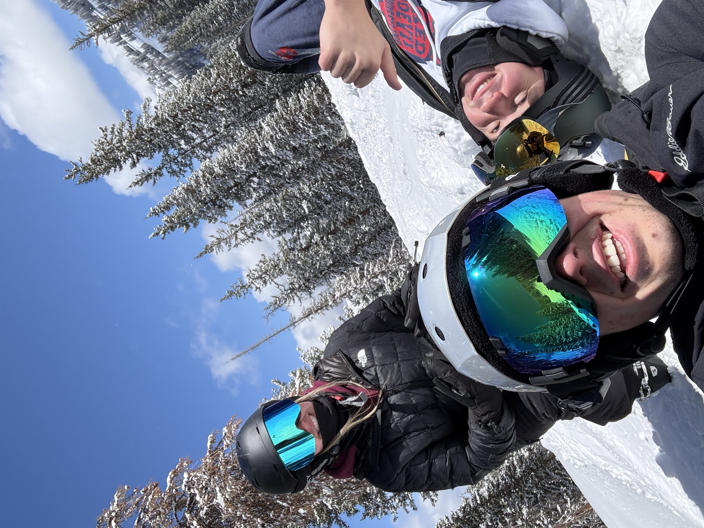
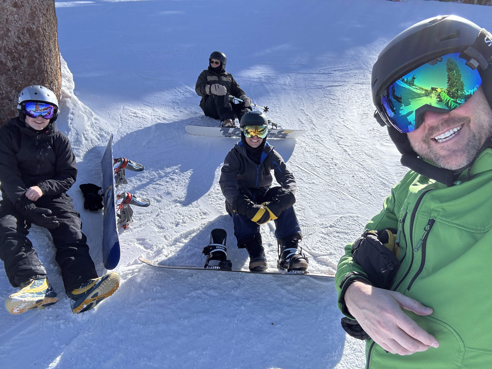

Snowboarding is a thrilling winter sport that combines elements of surfing, skateboarding, and skiing. It involves descending a snow-covered slope while standing on a board attached to your feet. Snowboarding can be enjoyed by people of all ages and skill levels, making
It a popular choice for winter sports enthusiasts. Whether you're a beginner looking to learn the basics or an experienced rider seeking new challenges, snowboarding offers a unique and exhilarating experience on the slopes. With the right equipment, proper technique,
and a sense of adventure, you can enjoy the thrill of snowboarding and create unforgettable memories in the winter wonderland.

Snowboarding offers a unique blend of physical exercise, mental focus, and pure enjoyment that makes it both rewarding and exciting.
It provides a full-body workout, strengthening the legs, core, and stabilizing muscles while also improving balance, coordination, and overall endurance.
Beyond the physical benefits, snowboarding can be a great way to reduce stress, as being outdoors in the fresh mountain air and surrounded by scenic winter landscapes helps clear the mind and boost mood.
It also encourages persistence and confidence, since learning new tricks and improving skills takes practice and determination. Additionally, snowboarding can be a social activity, whether you’re riding with friends or meeting others on the slopes, creating a sense of community and shared experience.
Overall, it combines fitness, adventure, and relaxation into one activity, making it a fun and beneficial way to stay active during the winter months.
Snowboarding is not only a thrilling sport but also an excellent way to build resilience and adaptability. Each run down the mountain presents slightly different conditions, from varying snow textures to changing weather, which challenges riders to think quickly and adjust their movements in real time. This constant need to adapt helps sharpen reflexes and decision-making skills while also building mental toughness. Over time, snowboarders learn how to stay calm under pressure and recover from mistakes, which can translate into greater confidence in everyday life. The sense of accomplishment that comes from mastering a difficult run or landing a new trick can be incredibly motivating and rewarding.
Another major benefit of snowboarding is the opportunity it provides to connect with nature and break away from daily routines. Spending time in the mountains exposes you to fresh air, sunlight, and beautiful scenery, all of which contribute to improved mental well-being and reduced stress levels. Unlike indoor workouts, snowboarding feels less like exercise and more like an adventure, making it easier to stay active without it feeling like a chore. It also encourages people to travel and explore new places, from local ski resorts to larger mountain destinations, broadening experiences and creating lasting memories. Whether you’re carving down a quiet trail or enjoying the atmosphere of a busy resort, snowboarding offers a refreshing escape that benefits both body and mind.
For more information, contact a snowboarding professional at 801-209-2959.